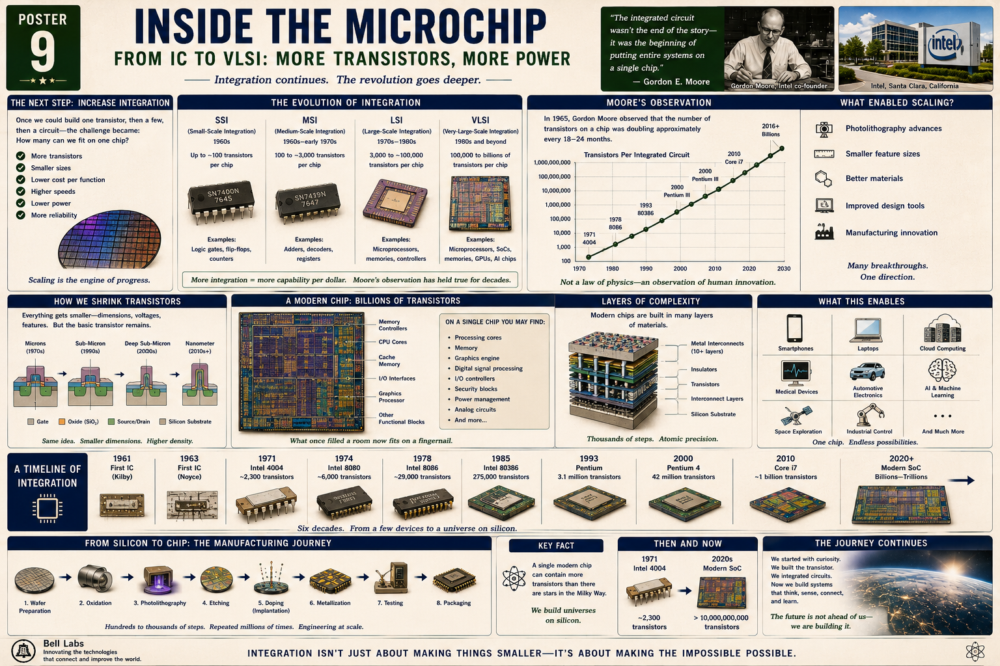

More transistors
Each generation packed more switching elements onto the same or smaller area of silicon.
Poster 9 · From IC to VLSI
A lesson for Klins on what happened after the integrated circuit: not just putting components on one chip, but packing in more and more transistors until entire systems could live on silicon. This is the story of SSI, MSI, LSI, VLSI, Moore's observation, and the modern chip world that includes CPUs, GPUs, AI accelerators, phones, cars, and cloud systems.

Once one transistor could become a circuit, the next challenge was how many could fit on one chip.
Each generation packed more switching elements onto the same or smaller area of silicon.
Reducing feature size let engineers fit more devices while shortening distances between them.
If more circuitry can be built at once on the wafer, each useful function becomes cheaper.
Shorter paths and smaller structures generally allow signals to move and switch faster.
Smaller devices can reduce the energy needed for each operation, though power density later becomes a major challenge.
Integration eliminates many external connections that used to fail in discrete systems.
The poster gives a useful staircase for how integration grew over time.
Up to roughly hundreds of transistors per chip. Typical functions: logic gates, flip-flops, counters.
Hundreds to a few thousand transistors. Typical functions: adders, decoders, registers.
Thousands to tens of thousands of transistors. Typical functions: early microprocessors, memory, controllers.
Hundreds of thousands to billions and beyond. Typical functions: CPUs, GPUs, SoCs, AI chips, memories, radios.
Gordon Moore noticed that transistor count on integrated circuits tended to rise rapidly over time.
In the mid-1960s, Gordon Moore observed that the number of components on a chip seemed to be doubling on a regular cadence. It was not a law of nature. It was a description of sustained engineering progress.
If chip density keeps rising, then capability rises too. That means more computation, more memory, more logic, and more complex systems for roughly similar physical size.
Moore's observation was never magic. It depended on huge advances in lithography, materials, factory discipline, design tools, packaging, testing, and economics. Human organization made the curve possible.
The basic transistor idea stays recognizable even while dimensions collapse from microns to nanometers.
Structures were relatively large by modern standards but already powerful enough for early microprocessors.
Transistors became smaller, faster, and denser, enabling the explosive rise of PCs and embedded systems.
Feature sizes plunged, interconnect complexity grew, and power management became a first-order problem.
Modern chips rely on astonishingly tiny features, multi-layer interconnects, and extraordinary process control.
What looks like one component from the outside is actually a city of specialized blocks.
General-purpose cores execute instructions and run the operating system and applications.
Dedicated compute blocks handle graphics, video, vector math, and increasingly AI workloads.
These keep data moving efficiently so the cores do not waste time waiting.
Controllers connect the chip to storage, displays, radios, sensors, networks, and external buses.
Modern chips often include secure enclaves, power managers, clocking systems, and monitoring logic.
DSPs, neural engines, encoders, decoders, and other fixed-function units boost specific tasks.
Modern chips are not flat drawings. They are stacked material systems built in many layers.
The base semiconductor foundation.
Where switching devices are created and controlled.
Separate structures and keep signals where they belong.
Multiple layers of microscopic wiring connect billions of devices together.
Poster 9 becomes much easier to grasp when you connect it to the chips surrounding you today.
Modern NVIDIA chips contain enormous numbers of transistors arranged for massively parallel work. They power graphics, scientific computing, simulation, and modern AI training and inference.
AMD designs high-performance processors and GPUs that show how VLSI supports both general-purpose computing and parallel acceleration.
Intel's long processor history illustrates the growth from early microprocessors to extremely complex multi-core systems.
Modern Apple chips combine CPU, GPU, memory systems, media engines, and neural processing into tightly integrated SoCs.
Mobile chips show how radios, processors, graphics, AI, and power management can all live together on compact silicon platforms.
Specialized accelerators illustrate that as transistor budgets rose, designers could tailor silicon to particular workloads.
Modern vehicles rely on microcontrollers, sensors, power-management ICs, networking chips, and increasingly AI-assisted processors.
Diagnostic tools, monitoring systems, and portable medical electronics depend on highly integrated low-power chips.
The cloud is really a vast concentration of advanced microchips working together in servers, storage, networks, and accelerators.
Poster 9 reminds us that the chip is a product of repeated industrial choreography.
Grow and slice high-purity silicon, then polish it into a precise starting surface.
Add insulating and structural layers that enable later patterning.
Define tiny features by exposing, developing, and removing selected material.
Control electrical behavior by placing the right atoms in the right places.
Build the wiring network that allows billions of structures to function together.
Screen out failures and verify that the chip behaves as designed.
Protect the die, provide external pins or balls, and manage heat and mechanical stress.
Real power comes from scale: the same precise process applied over and over across whole wafers and many production runs.
Your tools may feel simple compared to VLSI, but they sit directly on top of this history.
The Pi depends on a highly integrated SoC that combines CPU cores, graphics, memory interfaces, and peripheral controllers on one chip.
Your ESP32 is a tiny VLSI world: processor, memory, timers, GPIO, Wi-Fi, and Bluetooth all in one package.
Many of the small sensor boards on your bench contain surprisingly sophisticated ICs with amplifiers, filters, converters, and digital logic.
The parts you may treat as support components—voltage regulators, op-amps, MOSFET drivers, ADCs—are themselves packed integrated circuits.
When your breadboard becomes crowded with jumpers, it gives you a tangible feel for why the world pushed toward integration.
Every line of code you run on the Pi or ESP32 depends on the layered hardware complexity described in this lesson.
Inside the microchip is not just more of the same. It is the triumph of accumulation. Every improvement in lithography, materials, design, and manufacturing allowed more transistors to become one useful whole. That is why a chip today can hold what once would have filled rooms.
Poster 9 compresses decades of scaling into a very readable sequence.
The concept of multiple elements on one semiconductor piece is proven.
Manufacturing improves and integrated circuits begin their commercial life.
One of the early microprocessors demonstrates that a CPU can live on a chip.
Scaling enables more capable chips and the broad expansion of digital systems.
PCs, networking, mobile electronics, and embedded systems all accelerate.
VLSI reaches into phones, clouds, cars, robotics, and machine intelligence.
A simple comparison helps the scale sink in.
Chips such as the early Intel 4004 contained only a few thousand transistors, yet they already represented a huge advance over earlier discrete systems.
Modern chips may contain billions of transistors and combine compute, memory control, graphics, AI, media, security, and communication functions in a single device.